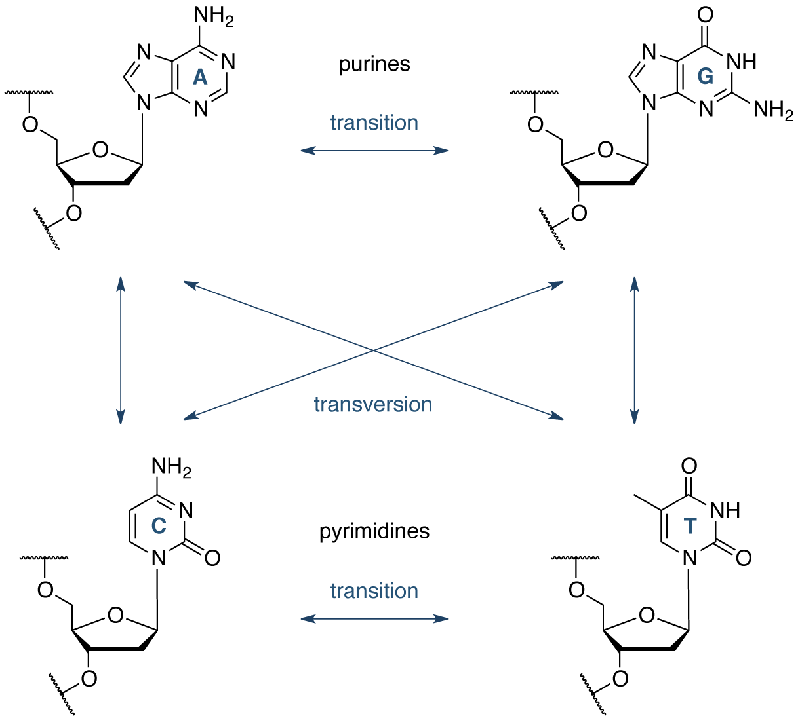
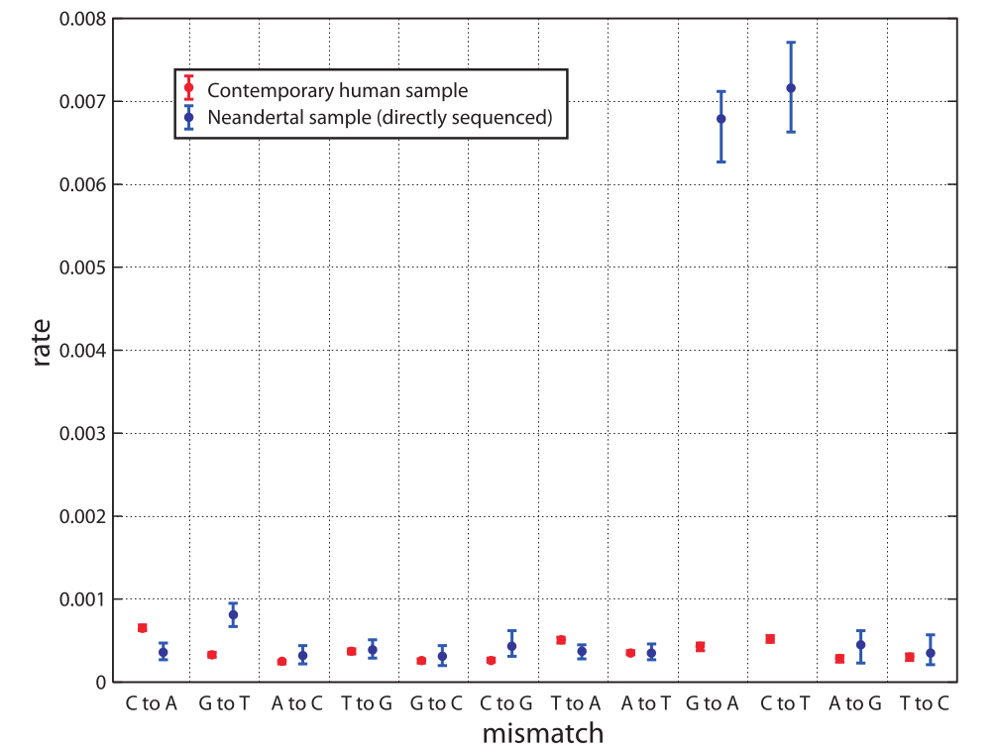
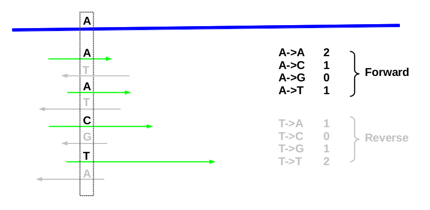
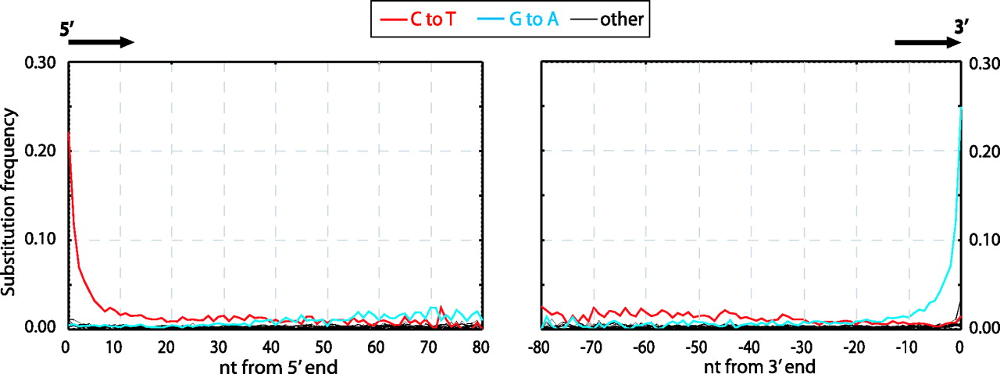

DNA Damage analysis of ancient DNA
Amin Saffari
Damage/Mutation in DNA
- Environment (Sunlight,X-ray,...)
- Within cell (Replication errors,Endogenous chemical agent,...)
Different substitutions

Ancient DNA
No repair pathway leads to accumulated errors
Vindija(Low Cov)

Patterns of damage in genomic DNA sequences from a Neandertal (Briggs et al.)
Why we are reanalysing ancient DNA
- Use Denisova, Altai and Ust-Ishim (High Cov)
- Single Stranded Library preparation
- Compare reads with consensus
- Compare the result with Modern Human (ssDNA)
Calculating Rate of Damage

Substitution along the read

Compare Denisova, Ust-Ishim and Altai
Compare Denisova, Ust-Ishim, Altai and Modern Human
Conclusion & Future work
- DNA Hydrolysis (C->T) deviated between ancient and Modern
- Pattern at some substitutions
- Test different Polymerases
Acknowledgement
- Marie-Theres Gansauge
- Matthias Meyer
- Kay Prüfer
- Janet Kelso
- Udo Stenzel
- Bioinformatic group